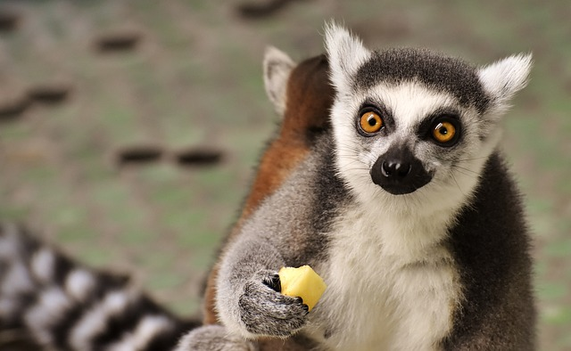

Mijn favoriete plekken om te zien in Ierland
Er zijn veel plaatsen om in Ierland te bezoeken. Hier is een kleine selectie!
Lemur!!
<1 />Een maki die van een kleine snack geniet
De kliffen van Moher
De Cliffen van Moher zijn te vinden in County Clare, waar ik vandaan kom. Ze zijn zeker een bezoek waard - kijk eens hoe cool ze zijn!

De Burren
De Burren is een gebied in County Clare en Galway bedekt met ongewone kalkstenen rotsformaties. Het werd gevormd door gletsjers die zich langs het landschap voortbewogen en paden in de zachte rots uithakten. Je kunt kilometers over kalkstenen paden lopen: grote platte rotsen gescheiden door diepe kloven.

De Burren heeft, doordat het een klimaat heeft dat anders is dan in de rest van Ierland, zijn eigen speciale flora en fauna. Je kunt daar bloemen zien die nergens anders op het platteland groeien. Omdat het landschap beschermd is Je mag ze niet plukken.

Achill Island
Dit is een groot eiland voor de kust van County Mayo. Je vindt er wild en een mooi landschap van bergen, moerassen en kliffen.

Fota Wildlife Park
Een natuurpark op Fota Eiland, in de Cork Provincie
Het is net een dierentuin met een verschil. Je wandelt over paden die door velden met giraffen lopen, je ziet misschien een maki in een nabijgelegen boom hangen terwijl je langs een groep pinguïns loopt.
Newgrange
Newgrange is beroemd om zijn graftombe. Een smalle tunnel leidt naar het centrum van de door de mens gemaakte heuvel. Een belangrijk Iemand werd daar duizenden jaren geleden begraven en de mensen hebben dit graf voor hen gemaakt. Het plafond en de wanden zijn gemaakt van op elkaar gestapelde vlakke stukken rots. Ieder jaar op een bepaalde ochtend, tijdens de Winter Zonnewende, verlicht de zon de hele tunnel tot in het midden van de kamer.

Plaatsen om te bezoeken in Dublin
Dublin is de hoofdstad van Ierland. Hier zijn enkele dingen die je daar kunt zien:
- Dublin Zoo (dierentuin)
- Wax Museum
- Episch Ierland